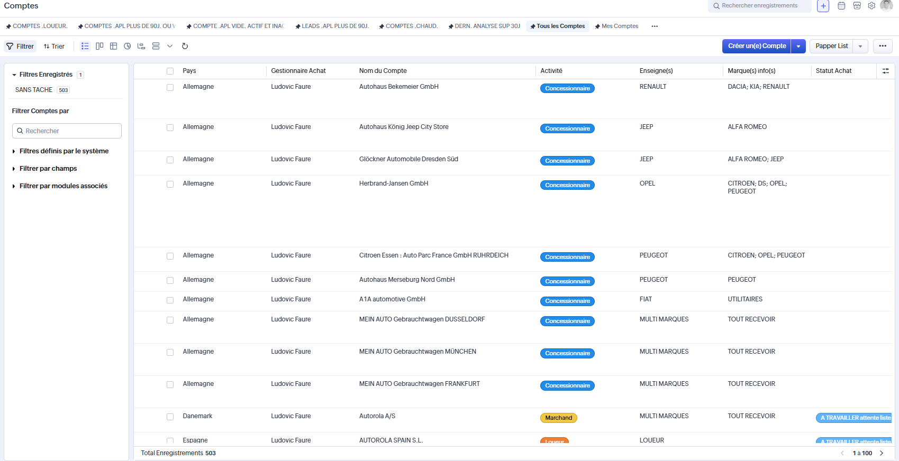

Qualité des données
18% des comptes sont considérés comme complets. Un travail d'enrichissement ciblé permettrait d'atteindre 70% de complétude.
Audit du module Comptes — 13 101 enregistrements analysés. Ce rapport présente les constats, les axes d'amélioration et les recommandations pour optimiser la qualité des données et l'efficacité des équipes.
Le module Comptes contient 13 101 enregistrements. L'analyse révèle des opportunités d'amélioration sur deux axes principaux : la complétude des données et l'ergonomie des vues listes.
18% des comptes sont considérés comme complets. Un travail d'enrichissement ciblé permettrait d'atteindre 70% de complétude.
La vue liste affiche 23 colonnes. Une personnalisation par profil améliorerait l'efficacité des équipes.
Mettre en place des règles de validation à la conversion lead → compte pour garantir la qualité en amont.
État des lieux quantitatif du module Comptes.
Six axes ont été identifiés pour améliorer la qualité et l'exploitabilité du module Comptes.
Des règles de validation pourraient être ajoutées pour s'assurer que seuls les leads suffisamment complets deviennent des comptes.
Adapter les colonnes affichées selon le profil utilisateur (vendeur, acheteur, marketing, admin).
Uniformiser la logique entre Statut Achat/Vente et Etat Achat/Vente (ex: Blacklist).
Certains champs (tmp_refresh_achat, heure de modification) n'ont pas vocation à être visibles en routine.
Un plan d'enrichissement ciblé sur les comptes sans NbVO, sans marques ou sans contact.
Déclencher des actions automatiques selon la valeur du Statut Achat (ex: tâche d'enrichissement).
Illustration de l'impact des améliorations sur le travail des équipes.
Situation actuelle : 23 colonnes, information "Lex Jours sans interaction" difficile à trouver.
Avec amélioration : Vue dédiée vendeur avec 8 colonnes essentielles. Gain de temps immédiat.
Situation actuelle : 37% des comptes sans NbVO → filtrage inefficace.
Avec amélioration : Rendre NbVO obligatoire à la conversion. Base fiable pour les décisions d'achat.
Situation actuelle : Statut "INCOMPLET" sans action automatique.
Avec amélioration : Workflow déclenchant une tâche d'enrichissement assignée au bon gestionnaire.
Un compte devrait être créé uniquement à partir d'un lead suffisamment qualifié.
Arbre de décision pour évaluer la complétude d'un compte.
1. Un contact joignable est rattaché au compte ?
→ Oui : passer au critère 2
→ Non : enrichissement nécessaire
2. Le NbVO est renseigné ?
→ Oui : passer au critère 3
→ Non : Statut Achat = INCOMPLET
3. Une marque est renseignée ?
→ Oui : compte qualifié
→ Non : Statut Achat = INCOMPLET
✓ Compte qualifié — exploitable par les équipes
23 colonnes sont actuellement affichées pour l'ensemble des utilisateurs.

Propositions d'organisation des colonnes selon les besoins de chaque équipe.
Analyse de complétude pour chaque catégorie d'information.
Statut Achat non renseigné : 596 comptes (4,5%)
Incohérence Blacklist : 7 comptes (Achat) / 85 comptes (Vente) — à harmoniser
Comptes sans gestionnaire Vente (user réel) : 5 352
Comptes sans gestionnaire Achat (user réel) : 515
Comptes avec gestionnaire "Auto Declic" : 7 507 — opportunité de réaffectation
SIRET manquant (France) : 105 comptes
TVA INTRA manquant (hors France) : 3 212 comptes
Chiffre d'affaires non renseigné : 7 656 comptes (58%)
Téléphone non renseigné : 945 comptes
Email non renseigné : 12 056 comptes (92%)
NbVO non renseigné ou à zéro : 3 379 comptes (26%)
Activité non renseignée : 310 comptes
Enseigne non renseignée : 1 406 comptes
Marques info(s) non renseignées : 1 742 comptes
Date dernière commande non renseignée : 11 671 comptes (89%)
Modèle(s) recherché(s) non renseigné : 13 038 comptes (99,5%)
Mode de règlement non renseigné : 12 453 comptes (95%)
Cinq flags permettent un suivi automatisé de la qualité :
Recommandation : vérifier la cohérence entre chaque flag et son champ source.
Actions prioritaires pour améliorer la qualité et l'exploitabilité du module Comptes.
3 927 comptes concernés. Plan d'enrichissement ou requalification en lead.
Environ 5 200 comptes. Campagne d'enrichissement prioritaire pour l'équipe achat.
Configurer des layouts spécifiques pour vendeurs, acheteurs, marketing et administration.
tmp_refresh_achat, heure de modification — à retirer des vues utilisateurs.
Rendre NbVO, marques et contact obligatoires avant conversion lead → compte.
Déclencher des actions automatiques selon la valeur du statut (INCOMPLET → tâche d'enrichissement).
92 comptes à corriger pour aligner Statut et Etat Blacklist.
Mode de règlement, modèle recherché, date dernière commande — à valoriser progressivement.